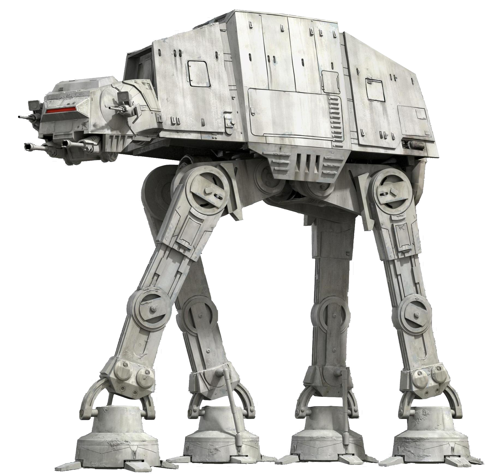
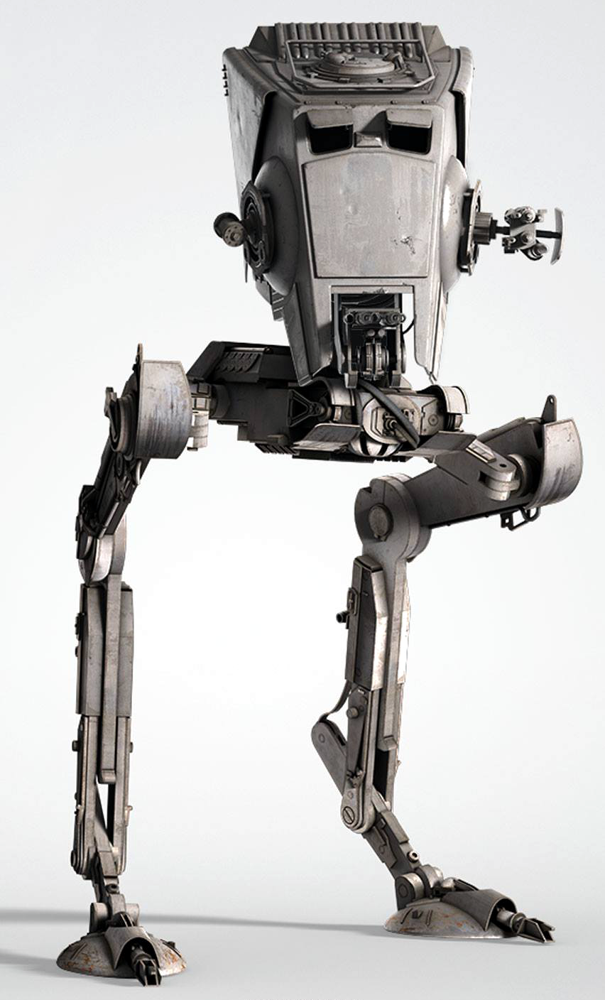

En esta página podréis encontrar información sobre distintos tipos de vehículos, algunas características y su historia. La información ha sido extráida de varias fuentes de internet, entre las que se encuentran la StarWars Wiki la Wikipedia y una enciclopedia del universo de Star Wars.
La información está clasificada en dos grandes grupos: Imperio o Rebelión según a qué facción pertenezcan los diferentes ítems.

-
AT-AT
Apariciones
V, VI Fabricante
Astilleros de Propulsores de Kuat Modelo
Transporte blindado todoterreno Tipo
Caminante de Asalto El transporte blindado todoterreno, conocido habitualmente como "caminante AT-AT", es un vehículo de combate de cuatro patas usado por las fuerzas de tierra imperiales. La cabina se encunetra en la "cabeza". De las "sienes" sobresalen los blásteres de repetición de fuego enlazado dual, y bajo la "barbilla" hay dos cañones láser Taim&Back MS-1. El blindaje resiste los impactos de bláster, lo que convierte el AT-AT en un vehículo casi imparable.
Gracias a su altura de veintidós metros, los AT-AT disponen de una gran cantidad de ventaja psicológica e infunden miedo a sus oponentes a medida que avanzan como gigantes acorazados. Sin embargo, también tienen sus puntos débiles. El cuello, en especial, es vulnerable a los disparos de bláster. Además, las grandes patas y su alto centro de gravedad lo convierten en un vehículo muy inestable. El escuadrón Pícaro, encargado de la defensa de la base Echo, aprovechó esta debilidad. El piloto Wedge Antilles y su artillero, Wes Janson, dispararon un arpón con cable para fijarlo a una pata. Antilles, rodeó las patas del caminante varias veces hasta que logró derribarlo. El cuello quedó expuesto y los aero-deslizadores consiguieron derribarlo.
Este caminante, carece de blindaje en el vientre, lo que le permite la instalación de cañones o lanzamisiles. Por este motivo, es común ver a los caminantes AT-AT acompañados de caminantes más pequeños, los AT-ST, que protegen sus puntos débiles. Luke Skywalker fue muy perspicaz y logró acabar con uno de ellos, trepando por el vientre de un AT-AT y logrando colar una granada en su interior.
 -
AT-ST
Apariciones:
V, VI Fabricante
Astilleros de Propulsores de Kuat Modelo
Transporte de exploración todoterreno Tipo
Caminante Compañero de ataque del caminante AT-AT, el AT-ST es un bípedo ligero que puede desplazarse rápido con movimientos ligero en la mayoría de terrenos. Su tamaño y agilidad lo convierten en el vehículo perfecto para las misiones de patrulla y reconocimiento. A pesar de tratarse de dos entornos distintos, el Imperio utiliza los AT-ST durante la batalla de Hoth, donde aplastan a las fuerzas rebeldes y en la luna de Endor, donde sufren una aplastante derrota.
Aunque, en comparación con los AT-AT, presetan muchas ventajas como su gran velocidad y su reducido tamaño. Sim embargo su potencia de fuego y su capacidad defensiva es limitada. Los cañones blásters medianos de la "barbilla" solo alcanzan los 2km, mientras que el lanzagranadas y el cañón bláster ligero que tiene a ambos lados de la cabeza, son muy efectivos de cerca. Asimismo, su blindaje ligero es capaz de repeler ataques de blásteres y otras armas pequeñas, pero no soporta los ataques producidos por cañones láser, misiles u otras armas pesadas. Los AT-ST también han sido víctima de ataques ingeniosos, como los llevados a cabo durante la batalla de Endor, donde los ewooks descubren un punto débil en la cabina de los caminantes, que pueden derribar con trampas basadas en impactar troncos de madera contra la cabina, atados a los árboles.
Sin embargo, quizá el punto débil más importante de los AT-ST resida en la facilidad de tomar el control de uno de ellos. Así fue como, tras aterrizar en el techo de uno de ellos durante la batalla de Endor, Chewbacca fue capaz de hacerse con el control de uno de ellos.
 -
Caza TIE
Apariciones
IV, V, VI, VII Fabricante
Sistemas de Flotas Sienar Modelo
Caza Estelar TIE/LN Tipo
Caza de motores de iones gemelos PRECISIÓN Y SIMPLICIDAD
Los motores del caza TIE le proporcionan su potencia y unos diminutos propulsores le permiten ajustar su dirección. Para minimizar el consumo de energía y maximizar la maniobrabilidad, los cazas carecen de sistemas como los escudos deflectores y los hiperimpulsores. La cabina central está equipada con controles de vuelo, pantallas y sistemas de selección del objetivo, y el espacio justo para un piloto. Los controles de vuelo son tan intuitivos y sencillos que los pilotos rebeldes novatos aprenden a pilotarlos al momento, después de robarlos en los campos de aterrizaje imperiales.
SUPERIORIDAD NUMÉRICA
Durante la guerra civil galáctica, la armada imperial somete diversos planetas y orquesta grandes batallas. Los cazas TIE son las naves principales del Imperio en las batallas de Yavin y Endor. Los pilotos reciben la consigna de que su bienestar está subordinado a los objetivos de la misión. Como los cazas son tan frágiles y los pilotos prescindibles, los TIE obtienen mejores resultados en ataques de grandes grupos. Se han sacrificado tantas mejoras para facilitar la producción en masa en las fábricas que los cazas son reemplazados de manera contínua a medida que caen en las batallas.
EVOLUCIÓN DEL CAZA TIE
Los cazas TIE guardan ciertas similitudes con otros cazas más antiguos de la era de la República. Mientras que los TIE tienen alas verticales parecidas a las de los Ala-V, los antiguos interceptores Jedi son incluso más comunes, con una cabina central, dos motores de iones, armamento básico y alas verticales como un TIE. Los Sistemas de "Flotas Sienar" se inspiraron en las naves de "Sistemas de ingenieria Kuat" para diseñar los TIE, gracias a la obtención de unos activos clave en la contratación de los ingenieros empleados por su competidor. La serie TIE ha dado lugar a muchos otros modelos, incluidos los interceptores TIE y los bombarderos TIE. Las fábricas de Sienar experimentan con mejoras adaptadas y producen modelos avanzados adaptados a las condiciones de vuelo locales, a los que añaden avances tecnológicos secretos. El "Inquisidor" utiliza un prototipo de TIE Avanzado, muy similar al Cimitarra (infiltrador Sith), de Sienar. Darth Vader pilota un TIE Avanzado.